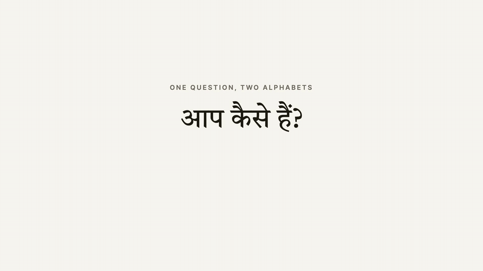
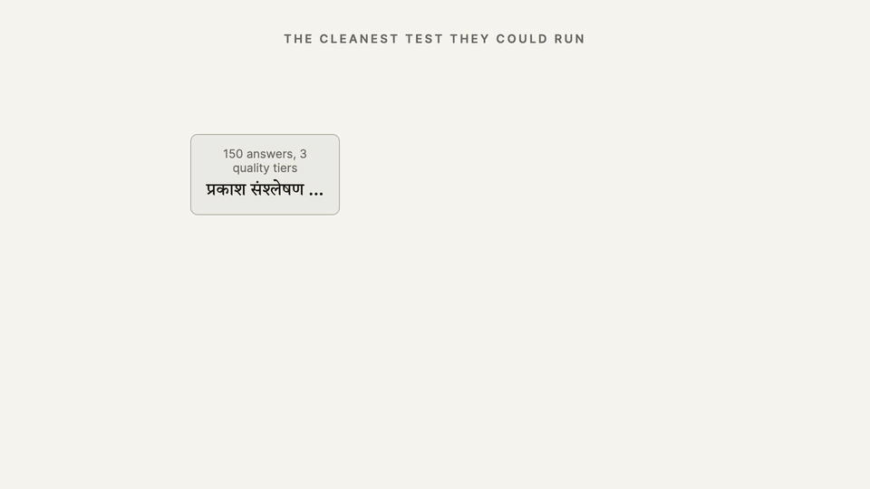
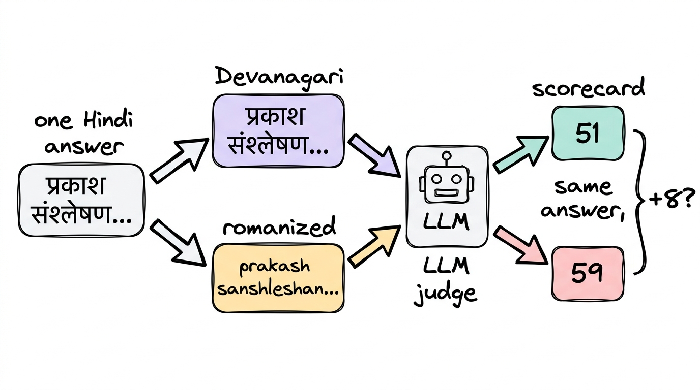
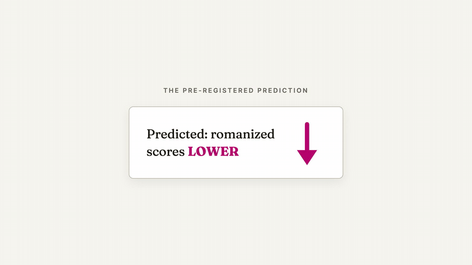
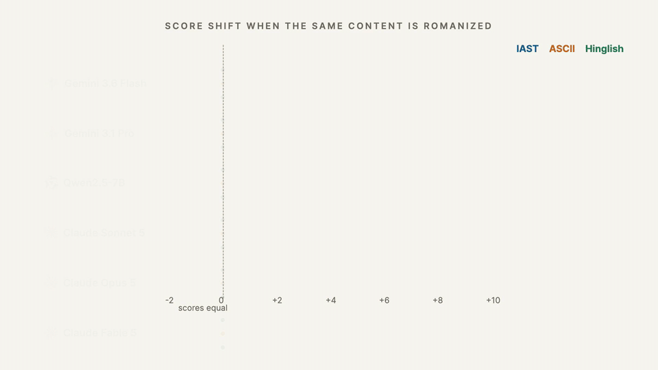
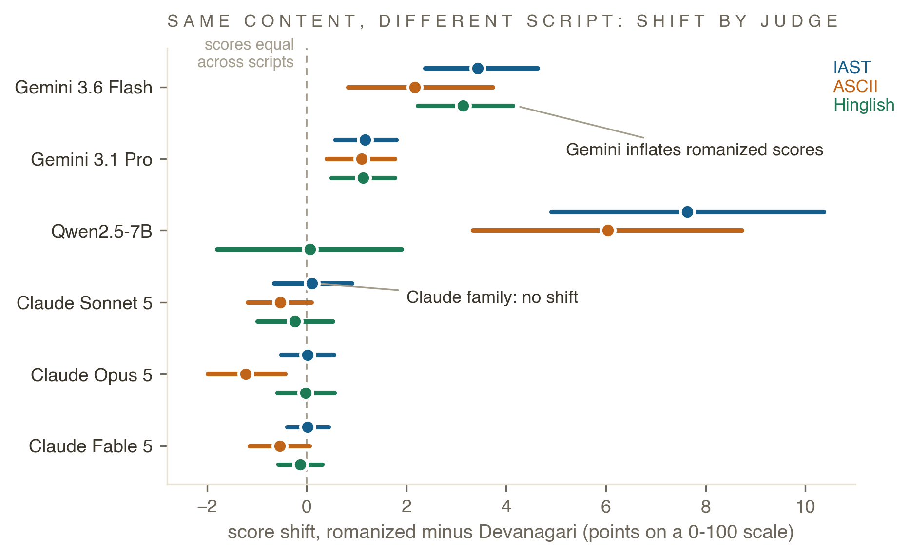
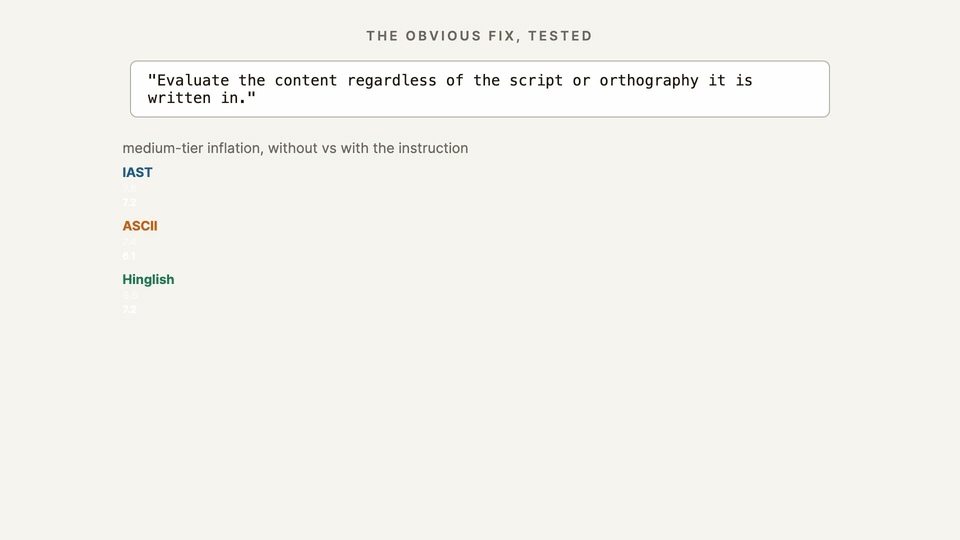
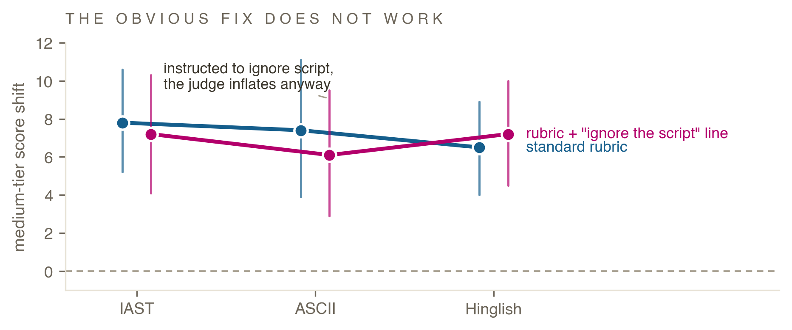
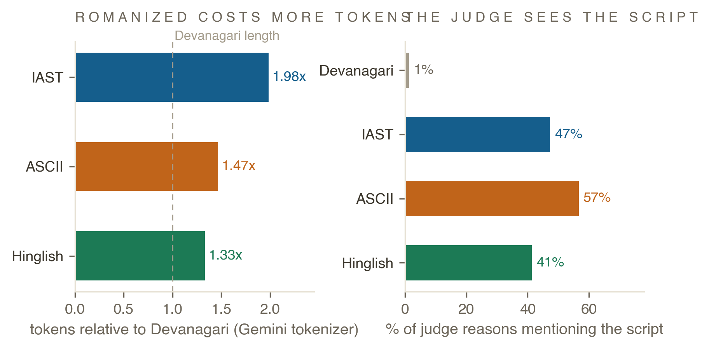

Do LLM judges penalise the script?
A script-controlled audit of LLM-as-judge scoring for Hindi, in native Devanagari versus three romanizations.
We held Hindi answers fixed and changed only the writing system. We predicted romanized text would score lower. Instead, Gemini judges scored it higher, by up to 7.8 points on ambiguous content, Claude judges did not move, a small open judge inflated bad answers by up to 17.8 points, and telling the judge to ignore the script changed nothing.
1. One language, two ways to write it down
A language is what you speak. A script is the set of symbols you use to write it down. The two are separable: the same sentence can be written in different symbol systems, the way the same song can be pressed on vinyl or saved as a file.

Devanagari (देवनागरी) is the native script of Hindi. It is also the script of Marathi, Nepali, and Sanskrit, and over 600 million people read it. The Latin script is the one you are reading right now. Writing Hindi in Latin letters is called romanization: you spell out the sounds of the Hindi words using English letters.
Hindi lives in both scripts every day. Books, news, and formal writing use Devanagari. But when people chat, comment, or search on a phone, a very large share of them type Hindi words on the English keyboard. Same words, same grammar, same meaning. Different letters. This habit is called romanized Hindi, or Hinglish.
One more thing matters for the experiment. Romanization has no official spelling. Scholars use a precise system with accent marks called IAST (kaise haiṁ āpa), keyboards strip those marks to plain ASCII (kaise haim apa), and everyday users improvise (kaise hain aap). That spread from formal to casual is exactly the gradient our experimental conditions walk down.
2. Machines now grade machines, and nobody checked the letters
Testing a chatbot used to mean hiring people to read its answers. That is slow and expensive, so the field switched to a shortcut: ask a strong language model to do the grading. This grader is called an LLM judge. You show it a question and an answer, and it returns a score, say 82 out of 100.
That score is not a side note. It flows into three places that decide what gets built and shipped.
The reliability literature has catalogued many failure modes of these judges: position bias, verbosity bias, self-preference. Every catalogue so far shares one silent assumption: the writing system of the judged text does not move the score. For a language with two written lives, that assumption carries real weight. A judge that scores आप कैसे हैं? and aap kaise hain? differently is not measuring quality. It is measuring orthography.
Prior work could not test this cleanly. Studies that compared Hindi against English compared two different texts, so language and script were tangled together. We untangle them: hold the language and the content fixed, flip only the script, and watch the score.
3. The experiment: one answer, four spellings, six judges


We wrote 150 Hindi instruction and response pairs across ten everyday domains, at three intended quality tiers of 50 items each: high (correct and complete), medium (correct but visibly incomplete), and low (curt, vague, or shallow). The responses were authored in Devanagari and frozen before any judging.
Each frozen response was then rendered in four orthographies:
- deva: the original Devanagari.
- iast: scholarly romanization with diacritics, produced deterministically.
- ascii: IAST with the diacritics stripped, a proxy for plain-keyboard romanization.
- hinglish: a natural user-style respelling, under a strict no-paraphrase rule. Every word, the word order, and all punctuation are preserved.
These colors keep their meaning in every figure below.
Six judges from three families scored every item in every condition on a 0 to 100 rubric: Gemini 3.6 Flash and Gemini 3.1 Pro through the API at temperature 0, one item per call, in randomized order; Claude Sonnet 5, Opus 5, and Fable 5 through blind sessions arranged in a Latin square, so no session ever saw the same item in two scripts; and Qwen2.5-7B-Instruct running open-weights on a single GPU. No judge was told the study concerns scripts. Each judge returned a score and a one-sentence reason, and the reasons became data too.
The unit of analysis is the within-item paired difference: the score of the romanized version minus the score of the Devanagari version of the same item. We report mean shifts with bootstrap 95 percent confidence intervals and two-sided permutation tests. Every number on this page comes from one scripted analysis, analyze.py, and its output ships with the paper.
We called our shot before collecting data
Before running the experiment we recorded a directional prediction: romanized versions will score lower than Devanagari versions, by analogy to the task-performance literature, where romanized input degrades model accuracy. Pre-registering the direction removes the suspicion of cherry-picking. It also means we must report whatever we find. We did not find what we predicted.
4. We predicted a penalty. The judges gave a bonus.



This figure is the study in one view, and it holds three different stories.
Gemini inflates romanized Hindi. Gemini 3.6 Flash scores the same content higher when romanized: +3.43 points for IAST (CI [2.37, 4.63], p = 5×10−5), +2.17 for ASCII (CI [0.83, 3.73], p = 0.003), and +3.13 for Hinglish (CI [2.23, 4.13], p = 5×10−5). Gemini 3.1 Pro shows the same sign at a third the size: +1.17, +1.10, and +1.13 points (all p ≤ 0.003). The bias shrinks at the stronger tier, but it does not vanish.
Claude does not move. Sonnet 5, Opus 5, and Fable 5 shift by at most 0.54 points in eight of their nine judge-by-condition comparisons, with confidence intervals containing zero and p ≥ 0.09. The single exception is the only significant result in our pre-registered direction anywhere in the study: Opus 5 penalises diacritic-stripped ASCII by −1.23 points (CI [−1.99, −0.43], p = 0.002). That is the condition that most visibly degrades the text.
The small open judge fails in its own way. Qwen2.5-7B inflates formal romanizations dramatically: +7.63 points for IAST (CI [4.9, 10.37]) and +6.03 for ASCII (CI [3.33, 8.73]). Yet on natural Hinglish it is flat: +0.07 points, p = 0.97. Its inflation also lives in a different place. Low-quality items shift +17.8 (IAST) and +17.4 (ASCII) points. The small judge loses the ability to recognise bad content once it is dressed in diacritics, while Hinglish, which is plentiful in web text, is judged as soberly as Devanagari.
Three conclusions follow. Script bias in LLM judges exists. It is a property of the judge, not of the task: same items, same protocol, three different behaviours across three families. And it is not monotone in how natural the romanization is: the strongest family is invariant everywhere, the mid-tier family inflates every romanization moderately, and the small open judge inflates exactly the romanizations it saw least in training.
5. The inflation lives where the judge has discretion

Splitting the shift by quality tier shows where the points come from. Under Gemini 3.6 Flash, high-quality items already score near 99 in Devanagari, so the scale offers no headroom, and they shift by at most 1.3 points in either direction. Low-quality items sit against a floor near 15 and shift by at most 2.7 points. Medium-quality items, which score near 51 in Devanagari, inflate by +7.8 (IAST), +7.4 (ASCII), and +6.5 (Hinglish) points, all p ≤ 1.5×10−4. The same shape holds for Pro at smaller size: +2.2, +2.1, and +2.7 points on medium items.
This is the pattern one expects if romanization blurs the judge's view of quality. Content whose flaws are obvious stays low. Content whose merits are obvious stays high. Ambiguous content drifts toward a generous middle. And ambiguous content is exactly where real systems compete: a 7-point swing at the middle of the scale is enough to reorder closely ranked models.
6. Telling the judge to ignore the script does not work


The remedy every practitioner would try first is one sentence in the judge prompt. We ran the full four-condition protocol again under Gemini 3.6 Flash with this line added to the rubric: "Evaluate the content regardless of the script or orthography it is written in."
The instructed judge inflates as much as the uninstructed one. Medium-tier inflation is +7.2 (IAST), +6.1 (ASCII), and +7.2 (Hinglish) points with the instruction, against +7.8, +7.4, and +6.5 without it. The confidence intervals overlap almost completely. The bias is not a surface behaviour the model can suspend on request.
7. The judge sees the script and inflates anyway

Two probes narrow the explanation space.
It is not token length. A standing hypothesis in the tokenizer-fairness literature is that length disparities drive downstream behaviour. We measured every item in every condition with the Gemini tokenizer. Romanized Hindi turns out to be the expensive form: 1.98× (IAST), 1.47× (ASCII), and 1.33× (Hinglish) the tokens of the same content in Devanagari. That is itself worth recording, because it reverses the folk wisdom of the 2024 romanization literature, which reported 2 to 4-fold savings from romanization; modern tokenizers have since closed the Devanagari gap. But token inflation does not explain the score inflation. The per-item correlation between token ratio and score shift is r = +0.11 (IAST), +0.05 (ASCII), and −0.08 (Hinglish), and no tier-restricted correlation exceeds |r| = 0.18. Longer input is not what earns the higher score.
The script is perceived. The judge's own rationales show it sees what it is scoring. Under Gemini 3.6 Flash, 47 percent of IAST rationales, 57 percent of ASCII rationales, and 41 percent of Hinglish rationales explicitly mention the script or the romanization, against 1 percent for Devanagari. Some rationales even name the orthography as a deficiency while the score lands higher than the Devanagari twin's.
Put together, the bias operates despite awareness. That is consistent with the mitigation failure: this is a miscalibration of quality assessment through an unfamiliar surface form, not an oversight the model can be alerted out of.
8. What practitioners should do
The audience for this result is anyone who runs an LLM judge over Hindi text: Hindi leaderboard evaluations, reward models trained on judged Hindi generations, and quality gates in front of romanized-Hindi chatbots. Three concrete steps follow from the data.
- Do not rely on a prompt line. The script-blindness instruction left medium-tier inflation at 6.1 to 7.2 points. Section 6 is the direct evidence.
- Report native-script and romanized slices separately. A single pooled number mixes a biased slice with an unbiased one. Stratified reporting makes the script axis visible instead of averaging it away.
- Pick and audit the judge. The bias is a property of the judge, in both size and sign. In this study the Claude judges were script-invariant to within half a point, the Gemini judges inflated every romanization, and a 7B open judge inflated formal romanizations of bad answers by up to 17.8 points. Run a script-invariance check like ours on your judge before you trust its Hindi numbers, and say which judge produced any number you publish.
The one-sentence takeaway
Which judge a practitioner picks silently changes how romanized-Hindi systems rank, and the size of that change (roughly 7 points on ambiguous content under Gemini 3.6 Flash) is enough to reorder closely ranked systems.
9. What this study cannot claim
Several weaknesses were design choices made for speed and budget, and a reader should weigh them.
- The dataset is model-authored. All 150 items and their quality tiers were generated by a language model under human-specified tier definitions, then frozen. Tier intent was strongly realised in the scores, but model-authored Hindi may differ from human Hindi in ways that interact with romanization. The hinglish condition is likewise a model respelling under a strict no-paraphrase rule; the protocol includes a 20-item native-speaker fidelity audit, and the audited sample ships with the data.
- The Claude arm is less controlled than the Gemini arm. The Claude judges ran through interactive sessions, not a version-pinned API, and each session scored 150 items in one context rather than one item per call. The Latin-square rotation keeps the script comparison fair, and no session could compare scripts within an item, but the setting is weaker. One of the three Claude judges shares a model family with the orchestrator of this study; the blind packets mitigate, and the Claude results are null results, which self-favouritism would not produce.
- Scale and scope are modest. One language, 150 items, six judges, one seed at temperature 0. The mitigation test covers one instruction phrasing on one judge. The quality tiers are coarse; a continuous-quality design would resolve the discretion story more finely.
- The pre-registration was directional and informal. It was recorded in the project log before data collection, not filed with a third-party registry. We state it because it disciplined our reporting: the headline effect is opposite to what we predicted.
10. Paper, data, and code
The full paper contains the method, the statistics, and the prior-work delineation in detail.
All datasets, per-call score files, the scripted analysis, figure build scripts, and spend logs are released. Every number on this page traces to results/analysis.json, generated by experiments/analyze.py from the raw judgment files. Total marginal compute cost of the study: under 5 US dollars of API spend plus roughly one A10G GPU-hour.